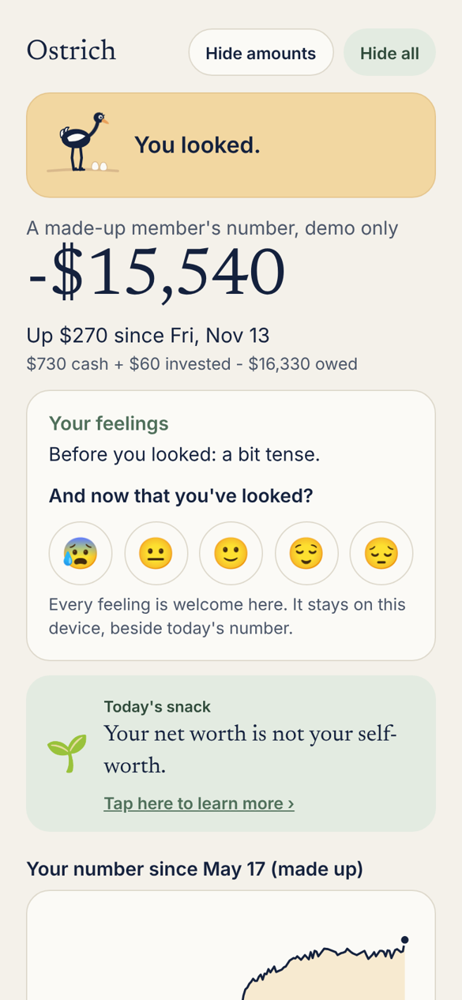
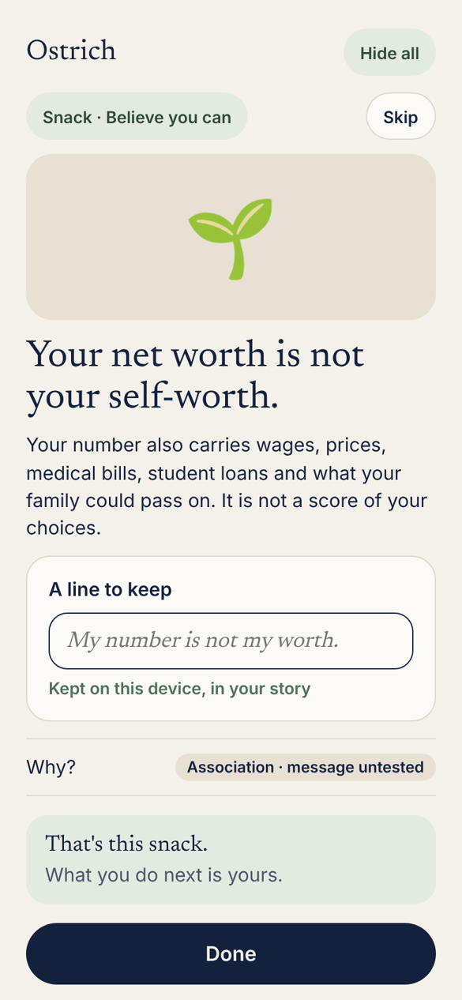
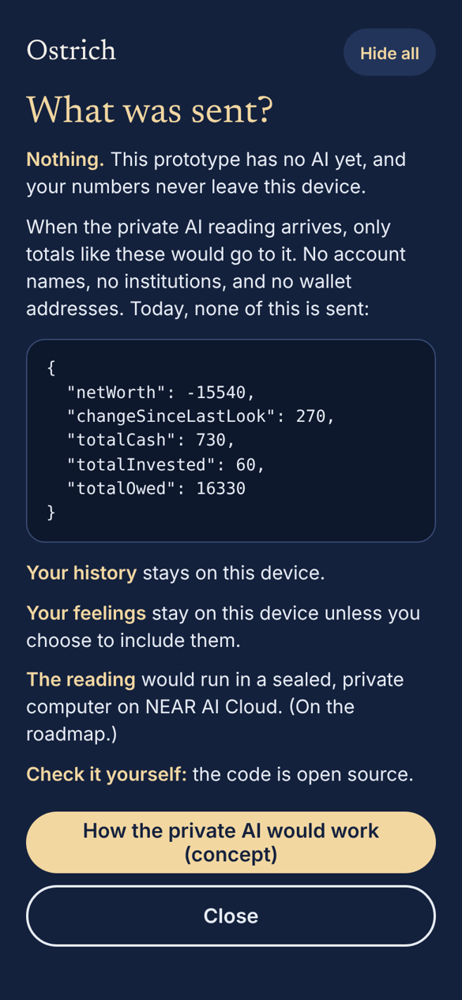

Product · the daily look
A personal finance tool for women (and men) who are struggling with money: when retirement feels hopeless, kids are expensive, and future jobs are uncertain.
Problem
Sometimes it's so overwhelming, we'd rather not look.
Solution
Looking is a habit, like the gym. Seeing it every day helps us stop bad habits over time. Avoiding it is what lets them last.
Ostrich
One number a day: your net worth, what you own minus what you owe. Secured by private AI, so your secrets stay yours.

How it works when she wakes up
It is 7:40 on a Tuesday. Before work, she opens Ostrich for the first time in weeks.
Her number is −$15,540.
The Ostrich app tells her: you looked, and that was the hardest part.
When a problem isn't defined, it's very hard to solve. Once it is, there are always ten ways to solve it, especially with AI.
Sample member: made up, not a real person. Her number is the app's demo data.
The main problem: what Ostrich solves every day
Researchers call it the ostrich effect. But real ostriches don't bury their heads; they lower them to turn their eggs.
37%
of Americans aged 18 to 29 avoid thinking about money when they are stressed
42%
of ages 18 to 29 live paycheck to paycheck
$1.263T
owed on US credit cards at the end of Q2 2026
The numbers are scattered across banks, cards, loans, brokerages and wallets, and looking can feel shameful. So, many people look away. The tools that exist assume she already has money, or knows to go looking.
Sources: Bank of America Better Money Habits 2026 (via InvestmentNews); New York Fed household debt report, Q2 2026.
In the live prototype today
Type cash, what you owe and what you've invested, or read a real NEAR account's balance. See your number with no red or green and no streaks. Every visit ends the same way: You looked.


Impact at scale
$214B
Members' net worth by 2056 if 1 in 4 of the 54.8M members we forecast save like her, in today's US dollars.
$42k
Her net worth after 30 years with Ostrich, saving $63 a month on a $15,080 minimum-wage salary and keeping Medicaid. The same $63 a month saved without investing: $22,620.
5.5M
People new to crypto and onchain savings, like NEAR, if 1 in 10 members try the savings ladder, with every risk said plainly.
Sample member: made up, not a real person. A scenario, not a promise; today's dollars; middle case. Ostrich never holds or moves this money and earns nothing from it. Not financial advice.
Retirement
On minimum wage, from $0: about $42,000 in today's dollars
Solid line: middle case, a third each in an S&P 500 fund, stablecoin DeFi and a REIT fund. Shaded: low and high cases. Dashed: saved without investing.
Sample member, made up, not a real person. Returns after inflation are assumptions (S&P 500 5%, DeFi 4%, REIT 4.5%), below 1972 to 2025 history; DeFi at 4% is the optimistic part. With card debt, paying it off comes first; she starts at $0. Not financial advice.
When is retirement within reach?
Pay while working
$15,080
a year
Future paycheck at 71
$21,700
Social Security from 70: about $16,800; savings at 3.9%: about $4,800 (rounded)
Basic costs, older adult living alone
$34,000
a year (Elder Index)
Passes. Even at 83% of benefits after 2034, about $18,800.
Likely, since Social Security is most of her income.
Short about $12,300 a year. Rent and place matter most.
The biggest lever is when she claims: Social Security at 70 pays about 77% more a month than at 62.
Sample member, made up, not a real person, today's dollars, rough estimates. Sources: SSA benefit formula; 2026 Trustees (CRS); Morningstar 2026 (3.9%); Elder Index 2025, UMass Boston; CRR Boston College. Not financial advice.
Closing the gap
| What changes (Social Security claimed at 70 in every row) | Future paycheck a year | Covers $34,000 basic costs |
|---|---|---|
| Today's plan: $7.25 an hour, saves 5% | $21,700 | 64% |
| 1. Save 10% instead of 5% | $26,500 | 78% |
| 2. Save 6%, take a 50% employer match and the new federal Saver's Match (from 2027) | $28,400 | 84% |
| 3. Earn $15 an hour, as many state minimums do, and save 5% | $33,900 | 100% |
| 4. Own a home outright by 70: basic costs fall to about $25,200 | $28,400 with lever 2 | 113% of the lower costs |
Inflation is already counted
$21,700 means $21,700 of today's buying power. In 2076 prices, at 2.5% inflation a year, that's about $74,000, and $34,000 of basic costs becomes about $117,000. Social Security rises with prices every year by law (2.8% in 2026).
How daily snacks pull these levers Planned
Wage matters most. Job snacks build the habit of applying while she still works, one small step a day, until $7.25 becomes $15. In a randomized trial, writing a job-search plan raised job offers about 30%.
Housing is next. Owning a home outright cuts basic costs by about a quarter. Saver's Match is free federal money many won't know they qualify for.
Sample member, made up, not a real person, rough estimates. Sources: SSA formula; SECURE 2.0 Saver's Match; Elder Index, UMass Boston; SSA 2026 COLA; Faberman, Mueller, Şahin and Topa (Econometrica); Abel and others (AEJ Applied, 2019). Not financial advice.
Why it works
A reason to trust us
No cash advances, payday-style loans or card offers. Other money apps can't easily say that, because those are their revenue.
A reason membership gets better Planned
Members see what happened to people like them, and nobody can pay to be listed. The advantage grows with every member.
ClassPass for wealth management
One membership fee gives members access to financial services, the way ClassPass opens gyms and yoga studios. Ostrich keeps 13%; the rest pays the partners who help her. Nobody pays to be listed.
Membership partners are Planned. Sharing results is opt-in, totals only and anonymous. Not financial advice.
Why I made this
Problem
Ask me my net worth today, and finding the numbers feels as painful as the tax filing I do once a year.
Solution
Integrations that read and never write. Not writing protects the assets; reading gives me visibility, control and insight to improve my habits.
Ostrich
Plaid and others already move the data, so Ostrich isn't the pipeline or the aggregator. Ostrich's one job stays the same: help you focus on your one number, and let you decide how to move it up.
The second problem
Problem
Privacy is a historical and social problem, not only a technical one. The default answer is to pretend it isn't there: cover your eyes, or make it so messy that even people give up looking.
Solution
Private AI. That's why Ostrich is at the NEAR hackathon.
Ostrich
Privacy for millions, even billions, of "regular Marys" who are far from cybersecurity and wouldn't know they need it, yet practise it every time they don't talk about money.
This is why private AI is so helpful, and so exciting, for personal finance.
The third problem
Problem
Walk into a wealth manager's office and you feel you're in the wrong place: not enough zeros, not a serious customer. They won't work with negative net worth.
Solution
The 1%'s playbook is on the internet, and now in AI. The new problem is unknown unknowns: you can't search for what you don't know exists.
Ostrich
The daily look, plus a snack, a short daily suggestion that might raise your net worth; and Ostrich TV (planned), talks on growing net worth by guest speakers.
Ostrich is for the 99%.
User journey: designing the ending to each session with closure, empowerment, calmness, and hope
| Visit | Its question | How it ends |
|---|---|---|
| Daily look | Where am I? | "You looked." The refrain. |
| Snack | Why does this happen? | Her own small step, in her words |
| Ostrich TV lesson Planned | What did someone else do? | A line to keep, then a stopping point |
| Year Planned | Who was I this year? | The book of her year, in her words |
Protect the refrain
"You looked." never changes. Nothing added, never varied to keep it fresh, and nothing after it except a quiet fresh-start line on a landmark she chose.
Cut
Anything shaped like "coming up next", a progress bar at the end of a visit, "2 lessons away from…", a notification teasing the next reading.
People remember an experience mostly by its peak and its end (Kahneman and colleagues, 1993). Cliffhangers buy less than they seem: a 2025 meta-analysis found no general memory advantage for unfinished tasks.
User journey design: Ostrich helps her tell her own story about money Planned
Fresh starts
"A fresh start, if you want one."
She picks her landmarks: her birthday, the new year, a change she reports. She names the new chapter herself; the last one stays as it was.
People start goals more often at landmarks like these (Dai, Milkman and Riis, Management Science, 2014).
Small wins
"I called about the late fee."
One optional check-in question: anything she did for her money, however small. Her words stay on her phone and never reach the AI.
Visible progress was the biggest daily motivator in about 12,000 work diary entries (Amabile and Kramer, 2011). The quoted win is from the sample member: made up.
Never: streaks, counts, scores, cliffhangers, countdowns or reminders. Every visit still ends on "You looked."
Technology architecture
Where money lives
Banks, cards and loans (Plaid); Ethereum-style wallets (Zerion); NEAR accounts (public NEAR RPC); and anything typed in by hand.
Ostrich server
Server routes hold the keys, never the browser. Stores nothing: balances pass through.
On her device
One format for every source. Net worth = assets minus debts. A daily snapshot. Feelings, notes and story never leave. No Ostrich database, no login.
Private AI
NEAR AI Cloud runs in a trusted execution environment. It gets totals only and returns one calm sentence.
This is the planned build. The live prototype runs the on-device part today, plus a real read-only NEAR account read. The bank connections and private AI are concept screens. Plaid and Zerion see the accounts or addresses they serve; wallet addresses are public onchain.
Technology · The NEAR ecosystem Planned
Private AI in Intel TDX and NVIDIA GPU enclaves. For Ostrich: the daily sentence, with proof she can check and a signed reply.
Code runs in a TDX enclave; each result is attested to the exact code and inputs. For Ostrich: add up totals with keys sealed inside.
Connects wallets on NEAR, EVM, Solana, TON, Stellar, TRON and Cosmos, and reads balances. For Ostrich: one connect button, read only.
Cross-chain swaps; balances held in a verifier contract; a token list with USD prices. For Ostrich: prices (used today), and Intents balances in the number.
An Ethereum-style chain that runs on NEAR. For Ostrich: Aurora wallets join the Ethereum-style connector.
NEAR trading and lending, from Ref and Burrow. For Ostrich: deposits count as assets, and loans as debts.
HOT's exchange, built on HOT Bridge and NEAR Intents. For Ostrich: HOT Omni balances counted; swaps stay in HEX.
The rule for all 17
Read, never move money. Ostrich uses only the reading part of each; swaps, bridges and signing stay off.
From each project's docs and GitHub where reachable, Nov 8, 2026. All connections Planned, except the NEAR Intents price list, which the prototype uses today.
Technology · Open source for crypto and DeFi Planned
AaveKit GraphQL API, plus the Pool contract's account data: collateral, debt and health factor. For Ostrich: Aave loans count as debts.
Public REST API for vault and market positions and APY. For Ostrich: vault savings in the number.
Replaces the now-deprecated MetaMask SDK. For Ostrich: share an address to read. Never ask for a signature.
Read-only contract calls and batched reads, with no wallet and no gas. For Ostrich: read balances and loans straight from the chain.
Open-source adapters and a free API for yields, borrow rates and TVL. For Ostrich: neutral rates on DeFi rungs.
Shows which apps can spend a wallet's tokens. For Ostrich: list approvals in plain words and link out. Ostrich never revokes for her.
Local-first crypto tracker: read-only keys, data in an encrypted local database. For Ostrich: a model to follow.
The most-used audited library for smart contracts. Only if Ostrich ever writes a contract.
The multisig behind many Ethereum treasuries. An option for the donor fund, next to NEAR Business, Trezu and SputnikDAO.
Open-source wealth tracker. Learn from it, don't copy code: AGPL would require sharing Ostrich's source.
Same rule
Read, never move money. Each tool is used only for reading; anything that signs or sends stays off.
From each project's docs and GitHub, Nov 8, 2026. APIs are free to read today; terms can change. Not legal advice; check licenses with a lawyer before shipping.
Technology architecture, with the ecosystem Planned
Plaid for banks, cards and loans; HOT Kit and FastNEAR RPC for wallets on many chains; Aurora by Ethereum RPC; Rhea deposits and loans; NEAR Intents balances. Mortgage and BNPL typed in, staying on the device.
An OutLayer enclave keeps bank and wallet keys sealed inside, adds up assets and debts, and gives proof of the exact code that ran. Prices from the NEAR Intents token list and a TEE price oracle.
The daily snapshot and things with a date. Feelings and story never leave.
NEAR AI Cloud gets totals only, with proof of sealed hardware and a signed one-sentence reply. At login: one number, one sentence, and a Verify line.
Later, a way to give: anyone (a person, a foundation, a company) can pay for a membership for someone who can't afford one. Ostrich keeps none of it; all of it pays the partners who help her. The money waits in a shared wallet donors can check, and nothing leaves without several people approving (NEAR Business, Trezu or SputnikDAO). Not Ostrich revenue, and never members' own money.
Product design: what research says about how Ostrich is designed
| Connection | Research | What changes for her |
|---|---|---|
| One view of every account | In Iceland, after an aggregator app launched, bank overdraft (NSF) fees fell 14% in a year and 38% in two, with no alerts (Carlin, Olafsson and Pagel, Review of Finance 2023). | More chains in one calm number. Still no alerts. |
| Same app, the ostrich effect | People logged in less when overdrawn and more on payday; one more login a month went with about 17% less consumer debt (Olafsson and Pagel, NBER). | A negative number gets the same calm screen. A link, not proof. |
| Proof of privacy | When privacy ratings were shown clearly, 47% bought from high-privacy sites versus 6%, and paid about 59 cents more (Tsai, Egelman, Cranor and Acquisti, Carnegie Mellon, 2011). | A plain "Verified private" line she can tap. |
| Memecoins and mining rewards | Lottery-like stocks draw lower-income investors, who earn 2 to 3% less a year (Kumar, 2009). Attention-driven app trading predicted -4.7% returns in 20 days (Barber and others, 2022). | Counted, never promoted. No buy buttons, no streaks. |
| A donor treasury | When donors were told overhead was covered, donations rose about 75% versus seed money (Gneezy, Keenan and Gneezy, Science 2014). | 100% to partners, in a treasury donors can audit. Members stay private. |
Journal of Finance (Kumar 2009; Barber, Huang, Odean and Schwarz 2022); Information Systems Research (Tsai and others 2011).
Business model · 50 years
Ostrich never touches or manages that money. But that many members, growing their net worth together, is a strong voice when negotiating with fintech partners for better terms that help them grow it faster.
All members
81.4M
by 2076 (54.8M in 2056). Range: 41M to 163M. Most stay free: the daily look is free forever.
Paid members
7.0M
by 2076 (4.7M in 2056). Plus or Pro, Ostrich TV, or a seat from her employer. About 1 in 11.
Ostrich revenue a year
$116M
by 2076 ($78M in 2056). Range: $58M to $231M. Employers, memberships, group deals and partners.
Savers' net worth
$876B
by 2076 ($214B in 2056). The 1 in 4 members who save like the sample member. It stays theirs.
Sample member: made up, not a real person. A scenario, not a promise. Base case; ranges are low and high cases. After 2056 everything grows 2% a year, an assumption. Today's dollars.
Global expansion · A 100-year plan
| Year | Members | Paid members† | Member-owners | Revenue | Costs | Operating income | Members' net worth* |
|---|---|---|---|---|---|---|---|
| 2036 | 16.5M | 1.2M | 0.09M | $25M | $26M | −$0.8M | $10B |
| 2056 | 271M | 15.2M | 6.8M | $238M | $191M | $47.0M | $0.7T |
| 2076 | 776M | 38.2M | 19.7M | $661M | $536M | $124.7M | $3.9T |
| 2086 | 1.04B | 51.3M | 30.1M | $888M | $721M | $167.6M | $7.2T |
| 2096 | 1.40B | 68.9M | 42.6M | $1.19B | $968M | $225.2M | $8.9T |
| 2106 | 1.88B | 92.7M | 58.6M | $1.60B | $1.30B | $302.7M | $10.6T |
| 2116 | 2.53B | 124.5M | 79.5M | $2.16B | $1.75B | $406.8M | $13.9T |
| 2126 | 3.40B | 167.4M | 107.4M | $2.90B | $2.35B | $546.7M | $16.2T |
Base case for comparison, 2126: 219M members, $311M revenue, $44.5M operating income, $1.13T members' net worth. Over 100 years the roadmap brings about $87.7B of revenue and $16.1B of operating income.
† Plus, TV and group deals; Feathers members are counted apart (284M in 2126). * Includes the zero-interest fund and Feathers savings; each member counted for at most 50 years. To 2076 from the forecast, then 3% a year. Today's dollars; every number is an assumption.
Just fantasizing: if Ostrich becomes a hackathon sponsor
Open-source React pieces: number first, Hide amounts, a quiet status line, no red, and a negative number that looks as calm as a positive one.
Twelve made-up people, from -$15,540 to a minimum-wage saver, as JSON. Builders never need anyone's real data.
The Connector SDK with examples for NEAR and Ethereum wallets. Nothing in it can sign or send.
One function that sends only totals to NEAR AI Cloud and returns the sentence plus a "What was sent" record.
Every finding with its source and evidence label, as open JSON, plus the snack format.
A calm screen for a negative number; a read-only connector; a research-backed snack; a privacy proof members can check.
After the weekend
Finalists who keep shipping get mentoring and a small "keep building" grant at 30 and 90 days, and reviewed work can appear in Ostrich with credit.
Judging would include the Ostrich rules: no real member data, read only, totals only to AI, sources cited. All Planned.
Founder of Ostrich
Solo hackathon team. A transgender woman in NYC.
I hit rock bottom, and kept on digging even further below.
I felt shame at rock bottom, and hid from friends and family.
I got a pot belly during COVID, and was surprised the day I finally noticed.
…and I built Ostrich for myself and women like me around the world, so that we don't have to struggle alone.